Same six rules as round 1, plus five that are just for menus. Every menu below uses the same row layout, so once you learn one you can read them all.
Every row shows its state as a big word right next to the label: ON / OFF written inside the switch, or a chip like 🔕 Silence. No more tiny "Off" stranded at the right edge.
A paragraph under every row becomes one plain line at 16sp. Longer explanations move behind an ⓘ so they're there when needed but not in the way.
Each group gets a lifted card with an icon and a heading, so you can tell from the shapes alone where one topic ends and the next begins.
Big settings screens open with one green box that says in plain words what the phone is doing right now, so you don't have to read every row to find out.
3-option radio lists become segmented buttons, 54dp tall. Only the chosen option's explanation is shown.
Red "Block / Remove" links repeated on every row add noise and invite mis-taps. Move them into each row's ⋯ menu.
Now: four sections, each with a paragraph, a small "Off" far from its label, and switches with no words. Proposed: a "Right now" summary up top, then cards whose rows all read label → one line → ON/OFF. Spam mode is a two-button choice. Unknown callers and the block list become rows that show their current value.
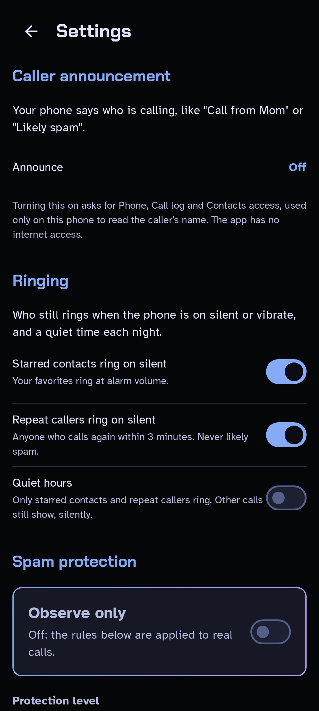
Now: five rows that all say a small blue "Silence" on the far right, then paragraphs. Proposed: the level picker is big, with one sentence explaining the chosen level. Each rule gets a 🔕 Silence or 🔔 Ring chip (word + icon + shape). The 911 rule is shown as 🔒 Always, so it's clear you can't turn it off.
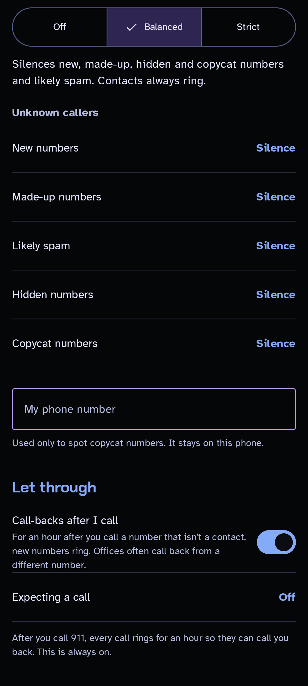
Now: the verdict ("Would silence: failed carrier verification") is small text in a long list, and "Block this number" is a link. Proposed: each screened call gets a verdict chip (red would-silence / green verified) and a real Block button. The status card is one bold line you can tap.
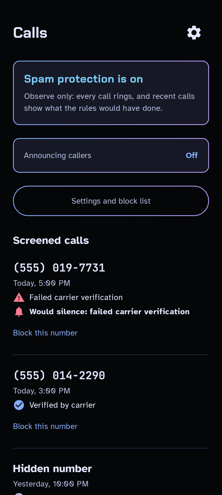
Now: two radio lists, 6 options, each with a small description, plus two switches with long explanations. Proposed: each choice is one row with a big check, and only the chosen one shows its description. Voice options become a 3-button choice. "Test the voice" is a real button.
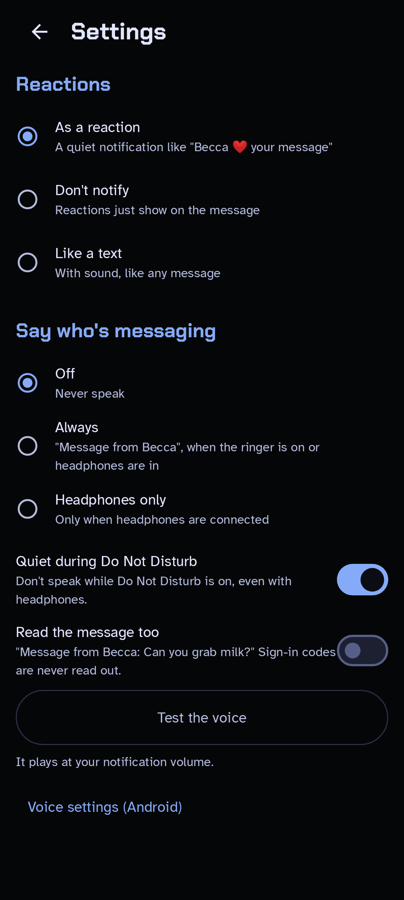
This is the biggest wall of text right now: 14 commands, each with a paragraph. Proposed: a cheat sheet. Commands are grouped by what they do, each one is a chip you can tap, and tapping shows one line + "Try it". There's a search box at the top, and the grouping makes it easy to find things.
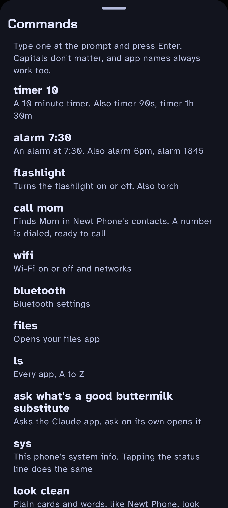
Now this is a decent list, but it's 7 rows with small grey subtitles, so the actions look the same and get lost. Proposed: Jump-to shortcuts on top as big chips, then a 2-column grid of actions, with words first and a hint only where it matters ("Search still finds it"). Cancel stays at the bottom.
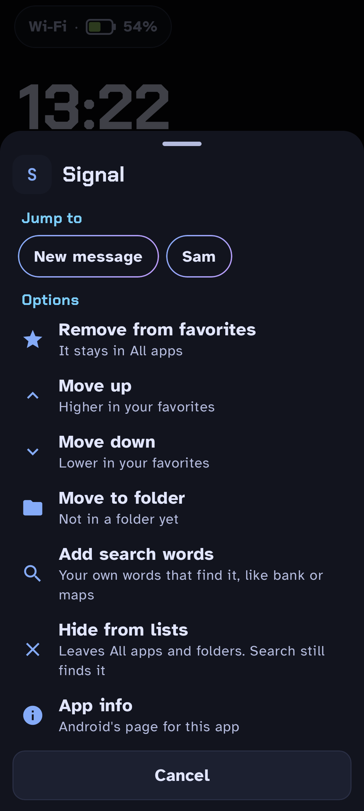
Now: each person has 3 buttons plus two red links, so it's 6 red lines on one screen. Proposed: one card per person with worded Text and Call buttons and a ⋯ button. Block, Remove and Color live in ⋯. The person's color shows as a stripe and is written out ("Yellow").
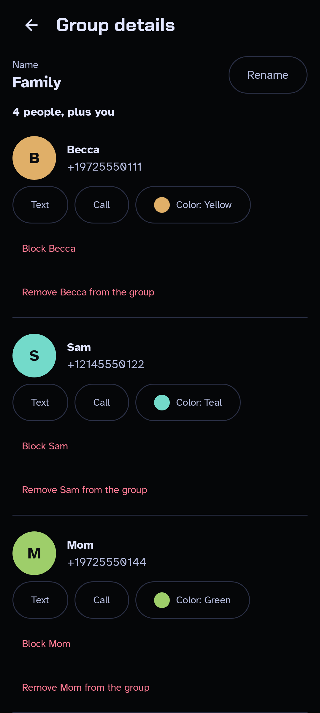
Now: a 13-row list that you have to scroll. Proposed: a 3-column swatch grid that fits on one screen. Each swatch is a big block of color with its name, colors someone already has show who has it, and the current one gets a thick ring and a ✓. "Where" becomes a two-button choice.
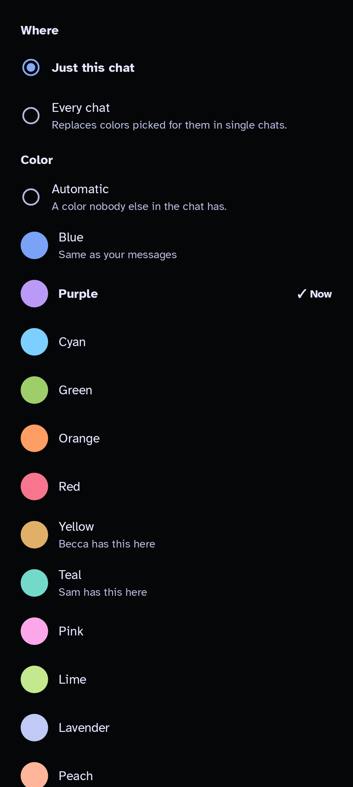
The terminal look stays. Now: the warning-notifications paragraph takes up as much room as the forecast. Proposed: alerts are one-line rows with a colored stripe and icon (red = Warning, amber = Watch). Notifications become a single ON/OFF row. That frees room for the 7-day forecast to show on the first screen.
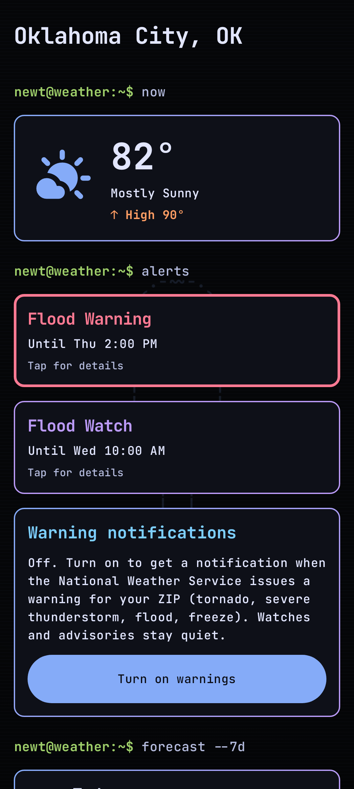
Now: the next turn is in a medium-sized card, and the bottom bar is small. Proposed: the turn is the hero, with a 72px arrow, a 48px distance and a 26px street name, readable at a glance on a phone mount. "Then" gets its own line. The bottom has worded 64dp buttons (Voice / End) and the arrival time in large type.
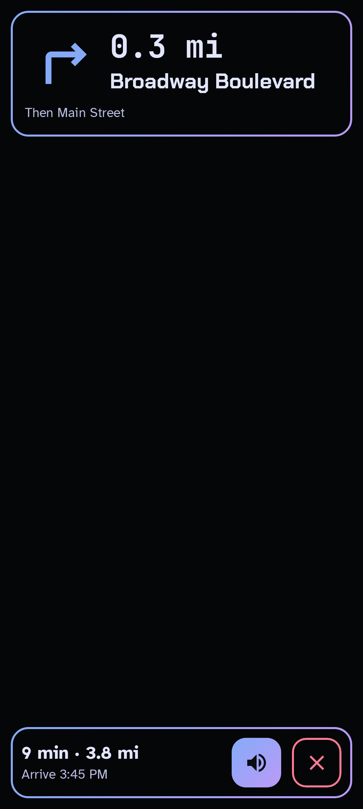
Now: four icon-only buttons (directions, share, copy, open), so you have to guess what each one does. Proposed: Directions is the green primary button with a word on it. The other three are worded buttons, and coordinates move to small text (still copyable).
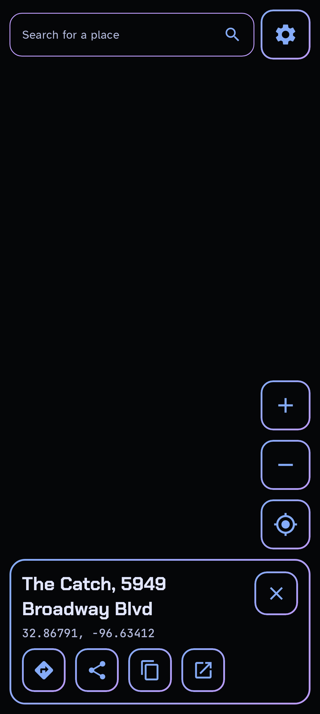
Now: a paragraph, one button, then more paragraphs about what happens next, and the bottom 60% of the screen is empty. Proposed: numbered steps. The current step is lit and has the button, finished steps turn green ✓, and the empty space shows what the app will do for you.
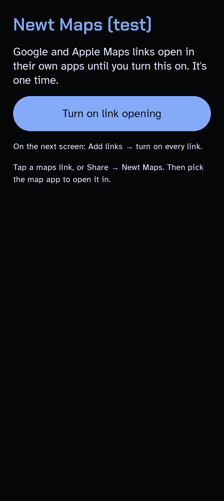
Dialpad: keys and Call button are already big. Bump the letters under the numbers to 16sp and make the "Matching contacts" rows 21sp to match Recents. In-call (active / conference): keep it, but put the button labels (Mute, Speaker…) at 16sp and fill the button while it's on (muted = gradient + "Muted"). All apps / Folders: good, they just need the 2dp borders and lifted cards. Letter grid: already excellent, leave it.